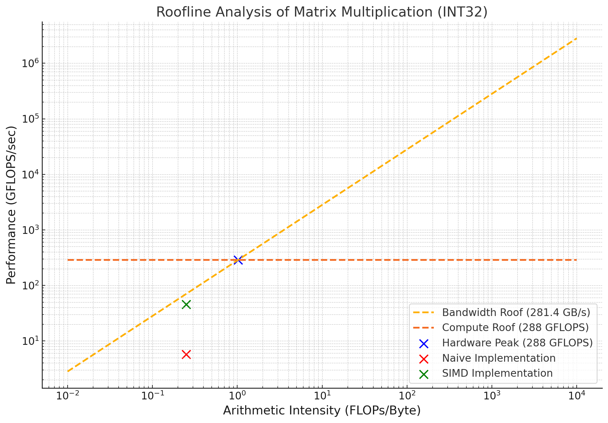

The experiments were conducted on a dual-socket Intel Xeon Gold 6248R processor with the following specifications:
The hardware Arithmetic Intensity (AI) is given by:
Hardware AI = Compute Roof / Memory Bandwidth
Substituting the values:
Hardware AI = 288 GFLOPS / 281.4 GB/s ≈ 1.02 FLOPs/byte
The problem involves multiplying two square matrices of size $N = 8192$. Each element in the resulting matrix involves:
Total FLOPs for the operation:
FLOPs = 2 × N³ = 2 × 8192³ = 1.099 trillion FLOPs
Bytes Transferred:
Matrix A: 8192 × 8192 × 4 bytes
Matrix B: 8192 × 8192 × 4 bytes
Matrix C: 8192 × 8192 × 4 bytes
Total Bytes = 805 MB
Theoretical AI is:
Theoretical AI = FLOPs / Bytes Transferred = 1365.33 FLOPs/byte
The naive matrix multiplication uses three nested loops to compute each element sequentially:
for (int i = 0; i < N; i++) {
for (int j = 0; j < N; j++) {
int32_t sum = 0;
for (int k = 0; k < N; k++) {
sum += A[i * N + k] * B[k * N + j];
}
C[i * N + j] = sum;
}
}
The experimental AI for naive implementation is:
Naive AI = 0.249985 FLOPs/byte
The SIMD implementation uses AVX-512 instructions, which can process 16 elements simultaneously. The inner loop is optimized as:
for (int k = 0; k < N; k += 16) {
__m512i a = _mm512_loadu_si512(&A[i * N + k]);
__m512i b = _mm512_loadu_si512(&B[k * N + j]);
__m512i prod = _mm512_mullo_epi32(a, b);
c = _mm512_add_epi32(c, prod);
}
Despite using SIMD, the AI remains the same as the naive implementation:
SIMD AI = 0.249985 FLOPs/byte
The SIMD implementation achieves better runtime because it efficiently utilizes available compute resources:
While both implementations are memory-bound, SIMD achieves better utilization of the available compute resources, resulting in a faster runtime.
The large gap between theoretical AI (1365.33) and hardware AI (1.02) highlights the imbalance in the problem:
The runtime difference (197.6 seconds for naive vs. 20.7 seconds for SIMD) demonstrates how vectorization can mitigate, but not eliminate, memory-bound limitations.
The Roofline chart below illustrates the performance of the naive and SIMD implementations relative to the memory and compute roofs:
Both implementations lie on the memory-bound side of the chart due to the low hardware AI, with SIMD achieving a significantly better runtime due to efficient compute utilization.